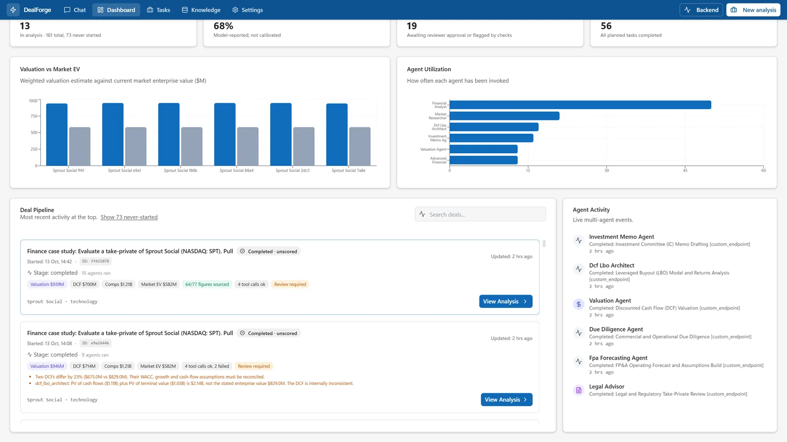

Quality & controls
Language models make confident mistakes. DealForge puts deterministic checks around them and shows the results to the user, instead of hoping the prompts are good enough.
| Control | What it does | Where |
|---|---|---|
| Approval gate | Plans are shown first; execution requires approve. The server rejects execution for a list that is not approved or whose dependencies are not done. | /chat/execute-task, UI |
| Dependency ordering | Data → modelling → synthesis; DCF/LBO agents wait for the valuation agent so they share its inputs. | project_manager.wire_stage_dependencies |
| Shared assumptions | WACC, terminal growth, horizon, starting growth, base FCF and market EV from the valuation audit are injected into every DCF/LBO prompt. | valuation_inputs.shared_assumptions_note |
| Evidence brief | All data points are collected with period, source link and basis (reported, derived, unverified). Duplicates across agents ("2025" vs "FY2025", rounded vs exact) collapse to one. | reports/evidence_brief.py |
| Memo grounding | Each figure in the memo is matched to recorded output; the grounded/total count is stored (for example 46 of 51) with the ungrounded figures listed. Citing a vendor that no tool returned is flagged. | validation/memo_grounding.py |
| Cross-agent reconciliation | Two DCF enterprise values more than 15% apart; an LBO entering below 95% of market EV or more than 60% above it; a DCF bridge whose PV of cash flows plus PV of terminal value is not within 5% of its enterprise value. | validation/reconciliation.py |
| Deterministic repair | If an LBO was requested but missing, one is built from sourced inputs; if a DCF bridge does not add up it is recomputed. Every assumption is listed in the output. | core/lbo.py, dcf_lbo_architect.py |
| Unusable-reply rejection | Empty, canned-error or off-topic short replies are failures: retried once and never stored as analysis or as the memo. | llm/gemini_client.py, investment_memo_agent.py |
| Tool-outcome recording | Success/failure per call, shown on the dashboard and available per agent result. | agents/base.py |
| Review gate | Reports carry a release status; unapproved reports download only as drafts (_DRAFT_not_approved, X-Release-Status: draft-not-approved), including from the chat Report button. | main.py, document_store.py |
| Provenance trail | Tool, parameters, raw response, timestamp and freshness per call; export at /deals/{id}/provenance/export. | core/provenance.py |
| Input guards | Prompt validation, JSON body size limit, upload path guards, optional admin bearer token for report endpoints. | chat_guard.py, path_guard.py |
What a reconciliation flag looks like
These are real warnings from a Sprout Social run, as shown on the dashboard row and in the Word report:
Two DCFs differ by 23% ($675.0M vs $829.0M). Their WACC, growth and cash-flow
assumptions must be reconciled.
dcf_lbo_architect: PV of cash flows ($1.11B) plus PV of terminal value ($1.03B) is
$2.14B, not the stated enterprise value $829.0M. The DCF is internally inconsistent.The second warning is now repaired automatically (the bridge is recomputed from the shared assumptions and the repair is noted). The first is intentionally flagged, not forced: two agents with different methodologies disagree, and a human decides which to trust.

Deterministic LBO assumptions
When the deterministic LBO is used, it states: entry at a 30% premium to market EV, 40% debt at 9% interest, 25% tax, 75% of post-interest cash flow sweeping the debt, five years, exit at the entry EV/FCF multiple (no multiple expansion), FCF growth fading from the observed rate to 2.5%. Change them in backend/app/core/lbo.py.
What these checks cannot do
- They verify consistency with recorded evidence, not truth: if a tool returned a wrong number, the number is "grounded".
- Reconciliation compares enterprise values and bridges it can parse; models that bury figures under unfamiliar keys are not compared.
- Model confidence is not calibrated, and the app says so.